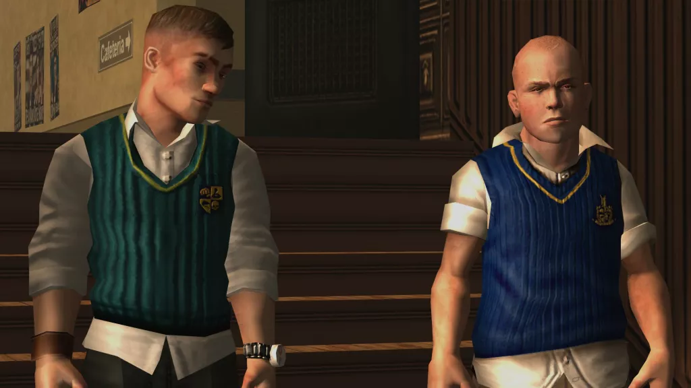

Según fuente, Bully 2 se comenzó pero nunca se terminó
By Jody Macgregor October 07, 2019
Apparently a "very small slice" of it was complete.
(Image credit: Rockstar)
Easter eggs and references to Bully found in Grand Theft Auto 5 and Red Dead Redemption 2 have fans of Rockstar's open-school game Bully convinced there's a sequel secretly in the works. According to sources quoted by VGC, a sequel was being worked on several years ago, and a playable slice of it existed, though production ultimately went nowhere.
According to the sources, a concept for the sequel's plot and where it would star Jimmy, the protagonist of the first Bully, and "depicting some of his time back in education, perhaps at school or college, was one option being discussed."
At some point between May 2010 and the end of 2013, Rockstar New England apparently put together a "very small slice" of Bully 2, "complete with simplistic open-world gameplay. It was built using the Rockstar Advanced Game Engine (RAGE), the same engine used for Grand Theft Auto 4 and 5, Max Payne 3, and both Red Dead Redemption games."
But that was as far as it went, and the team were ultimately moved on to other projects.
Thanks, VGC.